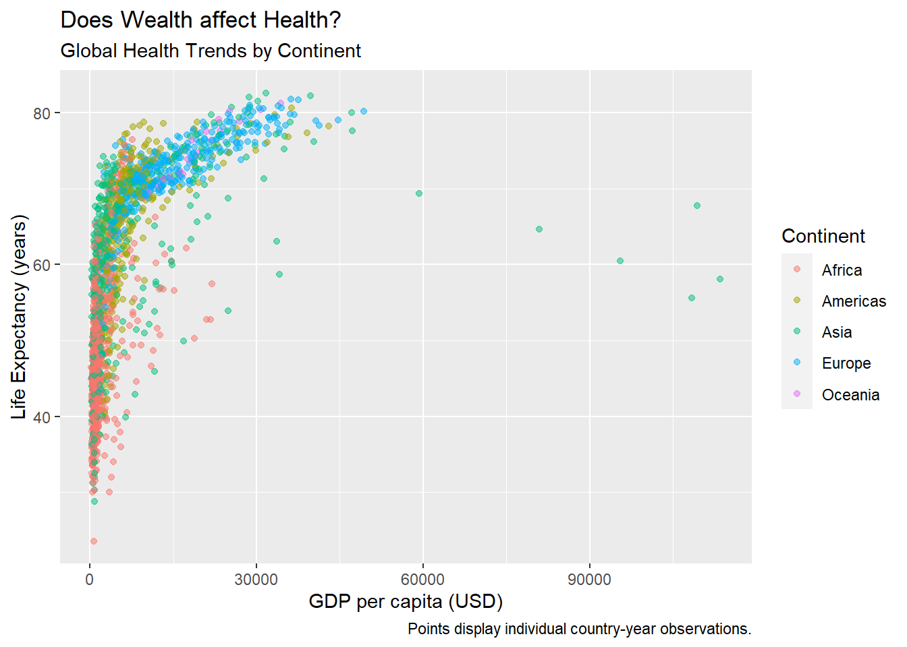
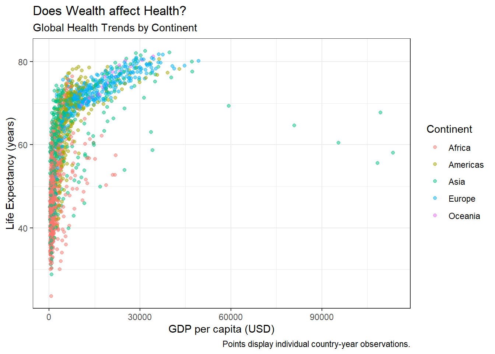
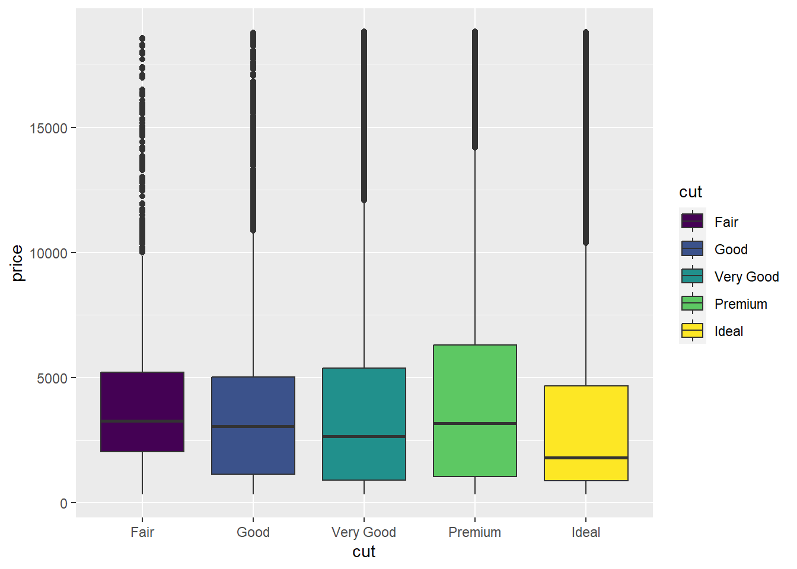
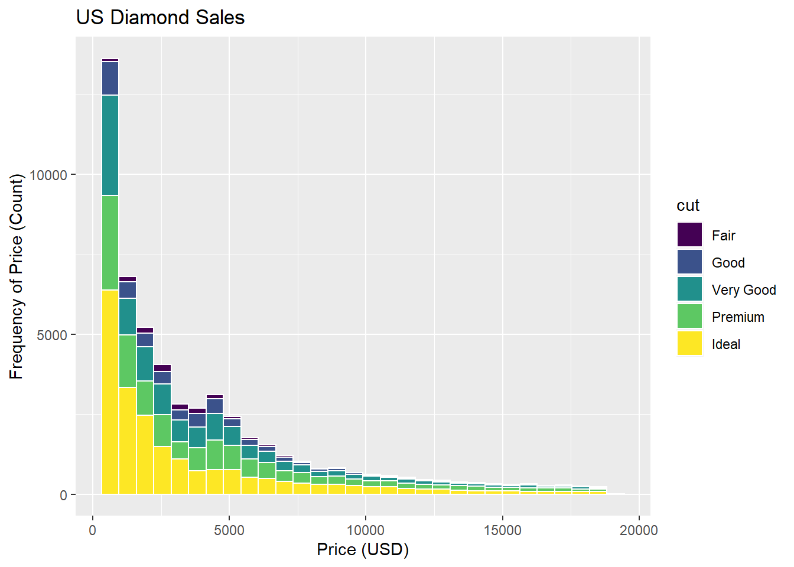

1 Visualization with ggplot in R
Visualization is a key part of statistical analyses, especially in systems engineering! Visuals themselves are often the analysis themselves! In this tutorial, we’re going to learn how to visualize data in the ggplot2 package.
Please follow along using the code below!
Getting Started
Loading Packages
Let’s load our packages with library().
# Data viz and data manipulation packages
library(ggplot2)
library(dplyr)
# Data sources
library(gapminder)Notes:
SAVE YOUR SCRIPT.
Always comment your code (what I’m doing now),
use lots of spaces, and keep it clean.
Gapminder data
Economist Hans Rosling made a dataset that examines change in life expectancy over time for most countries in the world. It is contained in the gapminder package!
## # A tibble: 1,704 × 6
## country continent year lifeExp pop gdpPercap
## <fct> <fct> <int> <dbl> <int> <dbl>
## 1 Afghanistan Asia 1952 28.8 8425333 779.
## 2 Afghanistan Asia 1957 30.3 9240934 821.
## 3 Afghanistan Asia 1962 32.0 10267083 853.
## 4 Afghanistan Asia 1967 34.0 11537966 836.
## 5 Afghanistan Asia 1972 36.1 13079460 740.
## 6 Afghanistan Asia 1977 38.4 14880372 786.
## 7 Afghanistan Asia 1982 39.9 12881816 978.
## 8 Afghanistan Asia 1987 40.8 13867957 852.
## 9 Afghanistan Asia 1992 41.7 16317921 649.
## 10 Afghanistan Asia 1997 41.8 22227415 635.
## # ℹ 1,694 more rowsEach row is a country-year, marking the life expectancy, population, and gross domestic product (GDP) per capita. On your end, you can only can see some of it, right?
Let’s check out what vectors are in this dataframe, using the glimpse function from the dplyr package.
# (Remember, a vector is a column in a spreadsheet;
# a data.frame is a spreadsheet.)
glimpse(gapminder)## Rows: 1,704
## Columns: 6
## $ country <fct> "Afghanistan", "Afghanistan", "Afghanistan", "Afghanistan", …
## $ continent <fct> Asia, Asia, Asia, Asia, Asia, Asia, Asia, Asia, Asia, Asia, …
## $ year <int> 1952, 1957, 1962, 1967, 1972, 1977, 1982, 1987, 1992, 1997, …
## $ lifeExp <dbl> 28.801, 30.332, 31.997, 34.020, 36.088, 38.438, 39.854, 40.8…
## $ pop <int> 8425333, 9240934, 10267083, 11537966, 13079460, 14880372, 12…
## $ gdpPercap <dbl> 779.4453, 820.8530, 853.1007, 836.1971, 739.9811, 786.1134, …Our data has six variables. Great!
1.1 Your first scatterplot
Using the gapminder data, let’s map a series of vectors to become aesthetic features in the visualization (point, colors, fills, etc.).
ggplot(data = gapminder, mapping = aes(
# Let's make the x-axis gross-domestic product per capita (wealth per person)
x = gdpPercap,
# Let's make the y-axis country life expectancy
y = lifeExp))
Huh! We made an empty graph. Cool.
That’s because ggplot needs helper functions to add aesthetic features to the graph.
For example, adding + geom_point() will overlay a scatterplot.
# Make a scatterplot
ggplot(data = gapminder, mapping = aes(x = gdpPercap, y = lifeExp)) + # same as above, except "+"
geom_point()
Learning Check 1
Question
What kind of relationship does this graph show? Why might it matter to policymakers?
[View Answer!]
The graph above shows that as average wealth (GDP per capita) in a country increases, those countries’ life expectancy increases swiftly, but then tapers off. This highlights that there is a strong relationship between wealth and health globally.
Learning Check 2
Question
What happens when you add the alpha, changing its values in the 3 visuals below?
# Run the following code:
ggplot(data = gapminder, mapping = aes(x = gdpPercap, y = lifeExp)) +
geom_point(alpha = 0.2)


[View Answer!]
alpha ranges from 0 to 1 and describes feature transparency. Increasing alpha to 1 makes points fully opaque! Decreasing alpha to 0 makes points fully transparent!
Learning Check 3
Question
We can make it more visually appealing. What happens when we do each of the following?
If you want to make it a single color, where do you need to write
color = ...?If you want to make it multiple colors according to a vector, where do you need to write
color =?
# Run the following code:
# Version 1
ggplot(data = gapminder, mapping = aes(x = gdpPercap, y = lifeExp)) +
geom_point(alpha = 0.5, color = "steelblue")
# Version 2
ggplot(data = gapminder, mapping = aes(x = gdpPercap, y = lifeExp, color = continent)) +
geom_point(alpha = 0.5)[View Answer!]
To assign a single color, you need to put color outside the aes() phrase, and write the name of the color.
To assign multiple colors, you need to put the color inside the aes(...) phrase, and write the name of the vector in the data that it corresponds to (eg. continent).
1.2 Improving our Visualizations
We can (and should!) make our visualizations much more readable by adding appropriate labels.
ggplot(data = gapminder, mapping = aes(x = gdpPercap, y = lifeExp,
color = continent)) +
geom_point(alpha = 0.5) +
# Add labels!
labs(x = "GDP per capita (USD)", # label for x-values
y = "Life Expectancy (years)", # label for y-values
color = "Continent", # label for colors
title = "Does Wealth affect Health?", # overall title
subtitle = "Global Health Trends by Continent", # subtitle!
caption = "Points display individual country-year observations.") # caption
We can actually save visualizations as objects too, which can make things faster.
Let’s save our visual as myviz
myviz <- ggplot(data = gapminder, mapping = aes(x = gdpPercap, y = lifeExp,
color = continent)) +
geom_point(alpha = 0.5) +
labs(x = "GDP per capita (USD)",
y = "Life Expectancy (years)",
color = "Continent",
title = "Does Wealth affect Health?", # overall title
subtitle = "Global Health Trends by Continent", # subtitle!
caption = "Points display individual country-year observations.") # captionNext, let’s try a few more learning check that will ask you to try our ways to improve the quality and readability of your visuals!
Learning Check 4
Question
Now run myviz - what happens?

[View Answer!]
When you save a ggplot to an object, eg. naming it myviz, you can call up the visual again as many times as you want by just running the myviz object, just like any other object.
Learning Check 5
Question
We can do better, adding things onto our myviz object! Try changing themes. What happens below?



[View Answer!]
theme_bw() makes a nice black-and-white graph; theme_dark() makes a funky graph with a dark grey background; theme_classic() makes a very simple graph, with fewer distractions.
I personally really like the default theme or theme_bw(). Sometimes theme_classic() can be really helpful if you have a particularly busy visual.
1.3 Visualizing diamonds data
Next, let’s use the diamonds dataset, which comes with the ggplot2 package
This is a dataset of over 50,000 diamond sales.
## # A tibble: 3 × 10
## carat cut color clarity depth table price x y z
## <dbl> <ord> <ord> <ord> <dbl> <dbl> <int> <dbl> <dbl> <dbl>
## 1 0.23 Ideal E SI2 61.5 55 326 3.95 3.98 2.43
## 2 0.21 Premium E SI1 59.8 61 326 3.89 3.84 2.31
## 3 0.23 Good E VS1 56.9 65 327 4.05 4.07 2.31We can use this visualization to check whether the cut of diamonds really has any relationship with price.
## Rows: 53,940
## Columns: 10
## $ carat <dbl> 0.23, 0.21, 0.23, 0.29, 0.31, 0.24, 0.24, 0.26, 0.22, 0.23, 0.…
## $ cut <ord> Ideal, Premium, Good, Premium, Good, Very Good, Very Good, Ver…
## $ color <ord> E, E, E, I, J, J, I, H, E, H, J, J, F, J, E, E, I, J, J, J, I,…
## $ clarity <ord> SI2, SI1, VS1, VS2, SI2, VVS2, VVS1, SI1, VS2, VS1, SI1, VS1, …
## $ depth <dbl> 61.5, 59.8, 56.9, 62.4, 63.3, 62.8, 62.3, 61.9, 65.1, 59.4, 64…
## $ table <dbl> 55, 61, 65, 58, 58, 57, 57, 55, 61, 61, 55, 56, 61, 54, 62, 58…
## $ price <int> 326, 326, 327, 334, 335, 336, 336, 337, 337, 338, 339, 340, 34…
## $ x <dbl> 3.95, 3.89, 4.05, 4.20, 4.34, 3.94, 3.95, 4.07, 3.87, 4.00, 4.…
## $ y <dbl> 3.98, 3.84, 4.07, 4.23, 4.35, 3.96, 3.98, 4.11, 3.78, 4.05, 4.…
## $ z <dbl> 2.43, 2.31, 2.31, 2.63, 2.75, 2.48, 2.47, 2.53, 2.49, 2.39, 2.…Looks like cut is an ordinal variable (fair, good, ideal, etc.), while price is numeric (eg. dollars).
A boxplot might be helpful!
ggplot(data = diamonds, mapping = aes(x = cut, y = price, group = cut)) +
# notice how we added group = cut, to tell it to use 5 different boxes, one per cut?
geom_boxplot()
Huh. How odd. Looks like the cut of diamonds has very little impact on what price they are sold at!
We can see lots of outliers at the top - really expensive diamonds for that cut.
Learning Check 6
Question
Let’s make this visualization more visually appealing.
What changed in the code to make these two different visual effects? Why? (Hint: fill.)
ggplot(data = diamonds, mapping = aes(x = cut, y = price, group = cut)) +
geom_boxplot(fill = "steelblue")
ggplot(data = diamonds, mapping = aes(x = cut, y = price, group = cut, fill = cut)) +
geom_boxplot()
[View Answer!]
In the first visual, we assigned all the boxplots to have the same fill (fill = "steelblue"), but in the second visual, we assigned the boxplot fill to be shaded based on the cut of diamond. This adds a cool color range!
1.4 Visualizing Distributions
Different geom_ functions use colors in different ways, but this is a good example.
For example, below is a histogram. It visualizes the approximate distribution of a set of values.
We can see how frequently diamonds are sold for certain prices versus others.
ggplot(data = diamonds, mapping = aes(x = price, group = cut, fill = cut)) +
geom_histogram(color = "white") + # notice new function here
labs(x = "Price (USD)",
y = "Frequency of Price (Count)",
title = "US Diamond Sales")
Learning Check 9
Question
Are most diamonds cheap or expensive? What type of distribution would you call this?
Normal?
Uniform?
Left Skewed?
Right Skewed?
[View Answer!]
This is strongly right-skewed distribution, because the majority of the distribution leans to the left (the clump of the data), while it has a long tail that skews to the right. The median is less than the mean in a right skewed distribution.
Conclusion
You made it! You have now tried out a series of visuals in ggplot. We will use ggplot a lot in this course, so please be sure to reach out when you have questions, talk with others in your group, and work together to build great visualization skills! (Plus, it’s super applicable professionally!)